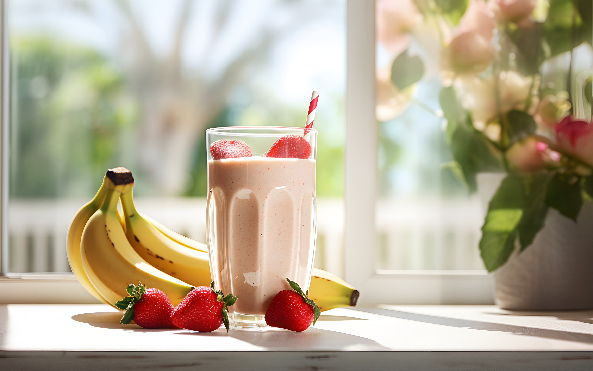

Protein Shake
This strawberry banana protein shake is a healthy, versatile drink,
perfect for a post-workout meal.

Time: 5 mins
Total Time: 5 mins
Servings: 2
Ingredients
- 6 medium strawberries
- 1 large banana
- 1 cup milk
- 1 scoop whey protein
- 3 tablespoons peanutbutter
- 3 tablespoons greek yogurt
- 1 serving of oatmeal, protein
Directions
-
Layer ingedients in a blender in this order; blend until creamy and
smooth.